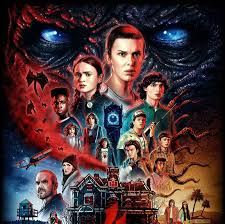
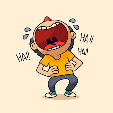

Meus projetos

Explorando Stranger Things: Guia Interativo da Série
Um site interativo que apresenta personagens, curiosidades e teorias sobre a série Stranger Things. Ideal para fãs que querem se aprofundar no universo de Hawkins.

Cuidados e Curiosidades sobre Cachorros
Um blog interativo com dicas de cuidados, curiosidades e histórias engraçadas sobre cachorros, para amantes dos nossos melhores amigos de quatro patas.

Coisas Engraçadas: Um Portal de Humor e Diversão
Um espaço para compartilhar memes, vídeos e textos engraçados, para garantir boas risadas e momentos de descontração com amigos e família.